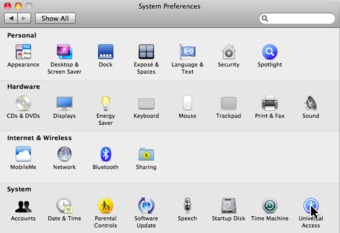
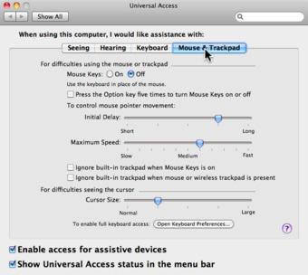
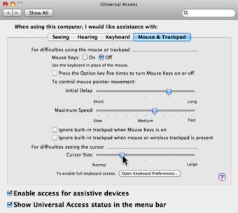
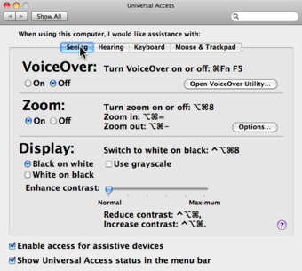
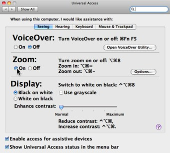
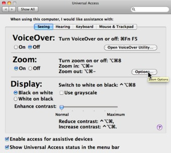
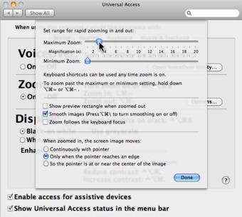
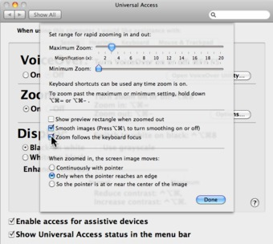
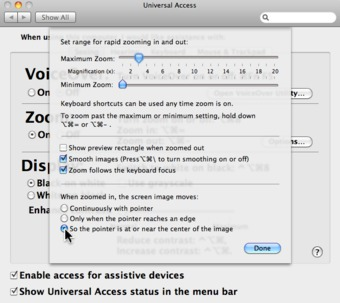

Using Magnifaction In Mac OSX
How To Set The Cursor Size And Use Magnification Effectively
I did some reading about assistive technologies on Mac OS X for a friend of mine who has trouble reading screen fonts. The following are instructions on how to set the cursor size, and use magnification effectively. Please note that I am using Snow Leopard (10.6). If you are using Lion (10.7), or another version of OS X, you might notice some differences in the figures.
The relevant preferences can be accessed from the Apple menu found in the top-left corner of your screen.
- Select "System Preferences" from this menu
- Once it has opened, find and click on the "Universal Access" icon

You may also find a small "Universal Access" icon on the menu bar at the top-right of your screen. All you need to do is select the menu item called "Universal Access Preferences ..".
There are a number of categories of Universal Access preferences: "Seeing", "Hearing", "Keyboard", etc. First, I will show you how to adjust the cursor size.
Cursor Size
- Click on the "Keyboard & Mouse" tab

- Adjust the cursor-size using the slider bar

Screen Zoom
- Next, switch to the "Seeing" tab

- Make sure that "Zoom" access is turned "On"

- In the "Zoom" section, locate and click the "Options..." button

The screen will look similar to this. For assistance when zooming, I recommend selecting the following settings:
- Set: "Maximum Zoom" to 3, and the "Minimum Zoom" to 0

- Select: "Zoom follows keyboard focus"

- Select: "So the pointer is at or near the center of the image"

Zooming Controls
When the screen is magnified and using the settings provided above, you will be able to effortlessly control the focal point of the magnifier with your trackpad, quickly moving from left-to-right or top-to-bottom of the full screen.
To get a bigger picture of what's happening on the screen, I recommend you try zooming-out, and back in again. This is important to check for pop-up messages, and dialogs, or to locate windows that are outside the magnified view. The following two keyboard combinations provide a quick way to do this.
| Zoom In | Zoom Out |
|---|---|
option-command-= |
option-command-- |
I encourage you to learn and use these keyboard combinations. Write them down on a sticky note and post it on the side of your screen or keyboard.
blog comments powered by Disqus